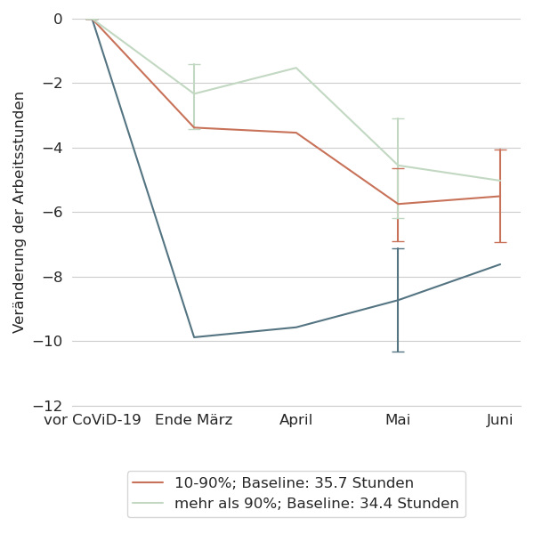
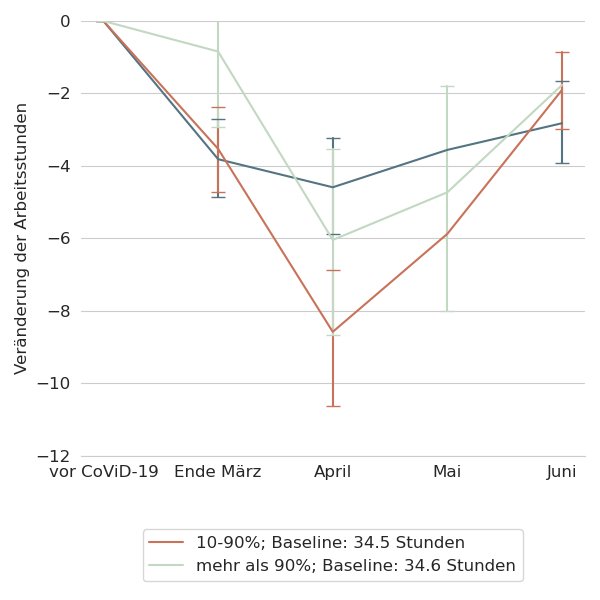
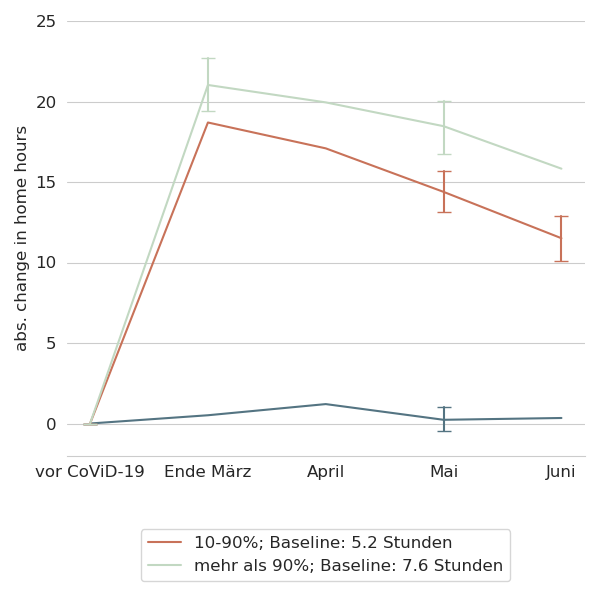
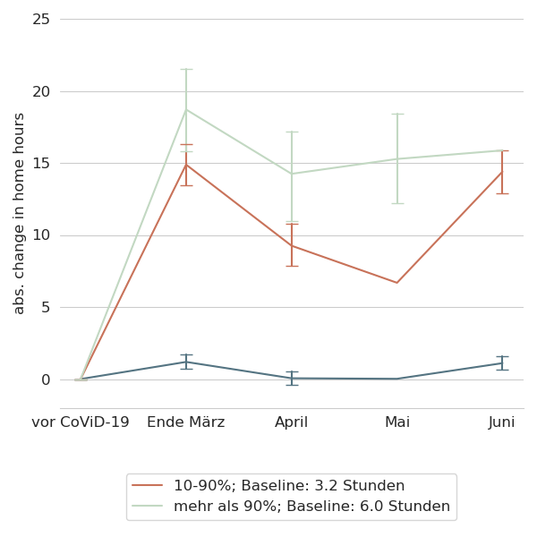

An introduction to the LISS (CoViD-19) data
Hans-Martin v. Gaudecker
Universität Bonn & IZA
Background
- LISS: Online Panel in the Netherlands, running since 2007
- Based on probability sample
- Roughly 5,000 households / 7,500 individuals
- Each month, respondents get 30 minutes of questionnaires
- Background data on Work, Health, Income, ...
- Questionnaires designed by researchers (~85c / minute / respondent)
- Around 85% of respondents can be linked to administrative microdata
CRC data collection
- C01: Panel of ambiguity attitudes / stock market beliefs (see my presentation this afternoon if interested)
- A01, A02, C01: Risk / time social preferences, parental expectations for children's careers, ...
- A03: Within-household financial decisions
CoViD-19 surveys
- See https://liss-covid-19-questionnaires-documentation.readthedocs.io/
- March 20-31: Risk perceptions, behavioural reactions and preferences re social distancing policies, changes in the work and childcare situation, intentions and expectations regarding consumption/savings decisions, mental health
- April 6-28: Risk perceptions, number of personal contacts, changes in the work situation, income and macro expectations
- May Mostly labour, some health, home schooling
- June Mostly labour, lots of job search, how do parents deal with opening of daycares / primary schools?
- September: Risk perceptions, support for policies, changes in the work situation, income and macro expectations
- Hopefully three more waves!
(CoViD-19) Time use & consumption
- November 2019: Baseline, helped redesign survey
- April 21-28: Similar to November 2019 edition, adapted to lockdown situation
- November: Similar to November 2019, adapted to current situation
- Hopefully another round November 2021
Some results
- Hours worked by essential worker status and capability to work from home
- Gender division of tasks
Hours worked
 
Hours worked from home
 
Hours worked by sector


Gender division of tasks
- On average, women reduce one hour extra during lockdown, effect vanishes by June
- No addtional effect of children being present in the household on either parent!
- If both parents work full-time before pandemic: roughly equal shares of additional childcare
- Typically 37 + 32 hours than 45 + 45
- Combinations FT / PT or FT / no work: Gender care gap increases
- Currently working on explaining this in model with specialization / subsidized childcare for relatively short hours
Other current projects
- Mental health (with Michaela Paffenholz, Sebastian Seitz, Bettina Siflinger, Moritz Mendel)
- Evolution of income / macro expectations (with Moritz Mendel, Simon Heiler)
More users wanted!
- Data come largely cleaned up
- Huge potential of data for "serious" research
- Baseline
- Many data collected when it mattered (will matter)
- Follow-up, including in administrative data
- Far more than current team could potentially do
- Broad base of CRC users helpful for additional funding
- Doodle for brainstorming meeting https://doodle.com/poll/xr7452ay2qryz2gx
- e-Mail me / let's chat!